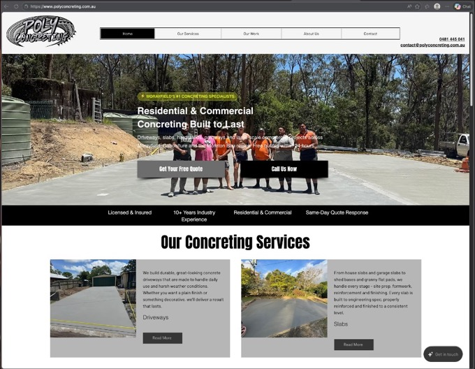
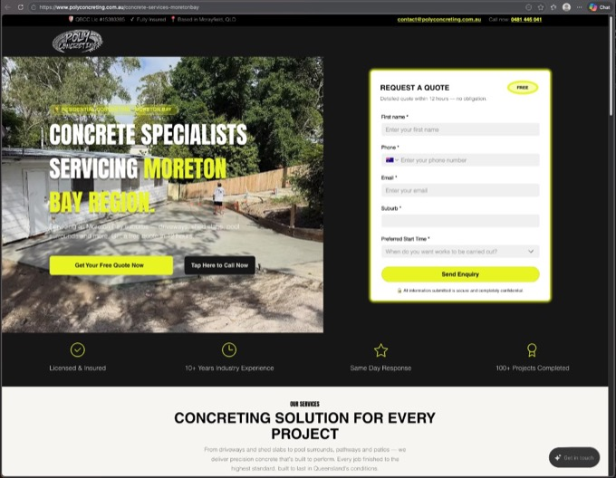
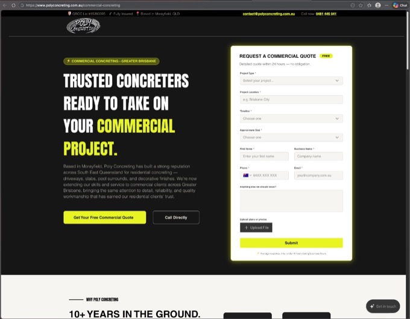
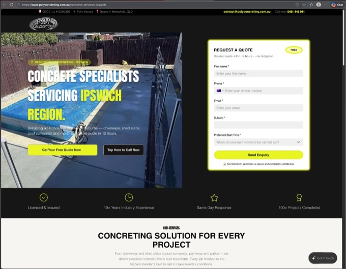
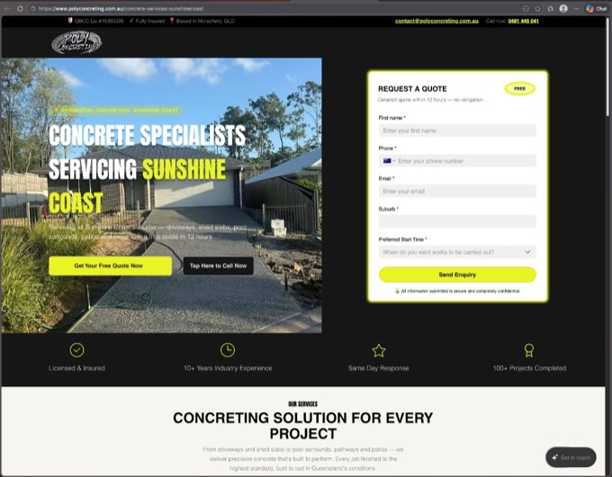

From family
trade to $500k+.
A complete custom-coded website build for a family-owned concreting business in Morayfield, QLD — 6 pages, 4 dedicated ad landing pages, and a site that has since supported over $500k in generated revenue. Strategy-first. Built to convert. Zero templates.
Poly
Concreting.
Where it started.
A family
business with
big ambitions.
Angelo and Sharimay built Poly Concreting the way most trades businesses are built — through hard work, reputation, and early mornings. A family-owned concreting company in Morayfield, Queensland, servicing South-East Queensland across residential and commercial jobs.
The business was growing. The website wasn't keeping up. Slow load times. Generic layouts identical to every other concreting site in Queensland. No infrastructure for running serious paid ad campaigns with dedicated landing pages.
"They gave me the brief. A complete rebuild. I wasn't going to waste it."
Angelo and Sharimay were already spending on Google Ads and Microsoft Ads — but sending that traffic to a homepage that wasn't built to convert it. The fix wasn't just a visual update. It was a full rebuild: new strategy, new architecture, new pages built specifically for the campaigns they were running.
Six custom pages. Four dedicated ad landing pages. A complete website built from scratch — designed and structured around one goal: converting paid traffic into booked jobs. Since launch, Poly Concreting has generated over $500k in revenue — and the site is still running. It stopped being a liability and started working for the business.
The challenge. The fix.
What the old site couldn't do.
The original website was generic — same layouts, same structure, same feel as thousands of other tradesman websites out there. It got Poly Concreting online, but it wasn't built to convert. And sending paid ad traffic to a generic homepage is the fastest way to waste an ad budget.
You pay for the click. The page doesn't do its job. The visitor leaves. The money is gone. A page that isn't built to convert one specific audience doesn't convert any audience.
- Slow page load on mobile — the majority of all their traffic
- No dedicated landing pages — paid traffic going to a generic homepage
- No location-specific pages for local SEO competition
- Template design identical to competitor sites across Queensland
- No trust architecture — no reviews, no urgency, no clear CTA hierarchy
- Platform bloat affecting load times and ad Quality Scores
Built around one goal.
The rebuild started from a blank file. Every page was designed with a single clear purpose — to move a qualified visitor one step closer to a quote request. No clutter. No wasted elements. No sections that dilute the goal.
The main site needed to establish trust fast and funnel visitors toward a quote. The landing pages needed to do exactly one thing: convert a paid click into a lead without giving the visitor any reason to leave before they fill in the form.
- Complete custom website build — designed and structured from scratch, not from a template
- Mobile-first — built for phones before desktop
- 4 dedicated landing pages matched to specific ad campaigns
- Trust architecture: reviews, credentials, project photos, local coverage
- One conversion goal per page — one CTA, one action
- Regional targeting in copy and structure for local SEO and ad relevance
Six pages. Four landers.
Built to convert clicks.
Four dedicated landing pages — each purpose-built for a specific ad campaign, region, and audience. No navigation. One conversion goal per page. Built to turn paid clicks into booked quote requests.
The site. Live.





What happened next.
From family
business to $500k+.
Poly Concreting was already a well-run operation before the rebuild. Good tradespeople, strong reputation, active ad spend. But the digital side wasn't keeping pace — the site couldn't convert the traffic they were paying for, and it didn't reflect the level they were actually operating at.
The rebuild changed that. Faster pages. Dedicated landing pages with a single conversion goal. A main site that matched the business they'd built. Ad spend that had been generating clicks but losing them at the page started translating into real quote requests.
The rebuilt site went live and has since generated over $500k in revenue. That result belongs to Angelo and Sharimay — exceptional operators who back themselves. The website just got out of their way.
Angelo & Sharimay.
This project happened because Angelo and Sharimay committed to doing it right. They were a growing family business and chose to invest properly in their digital presence — not just get something live. That trust matters to how I approach every project. Poly Concreting gave RASTRICK. MADE its first major full-scope build, and I built it to last.
Want a site that works?
Every project starts with a conversation. Tell me about your business, the problem you need solved, and what you need your website to do. Based in Canberra — building custom websites for clients across Australia and New Zealand. I'll come back with a clear recommendation and straight answer.